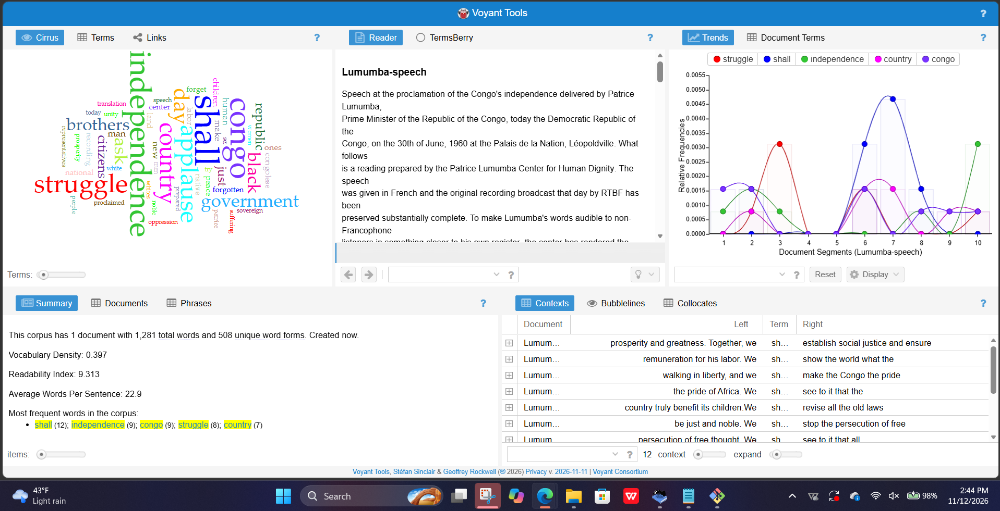
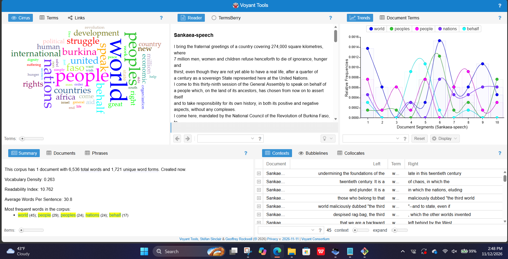
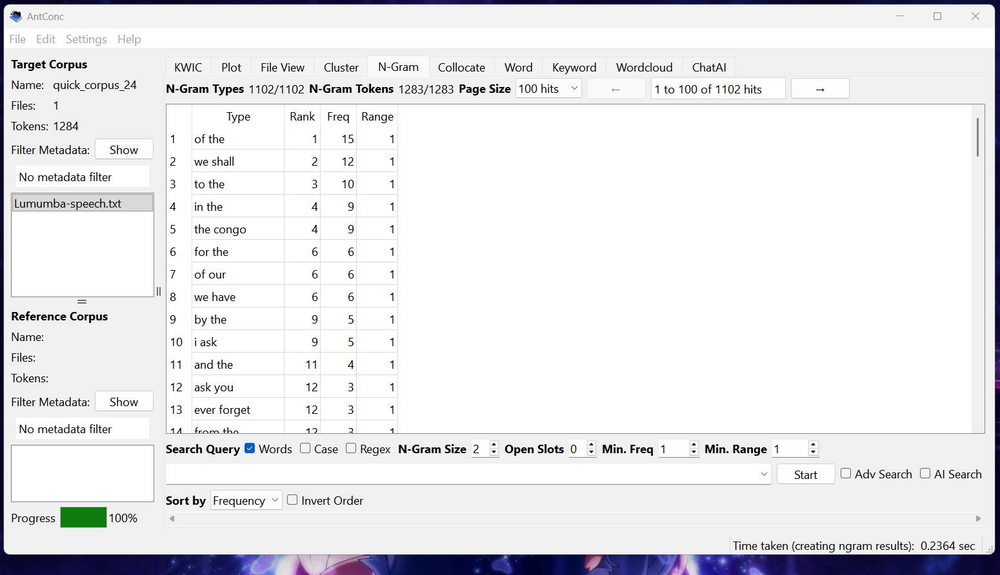
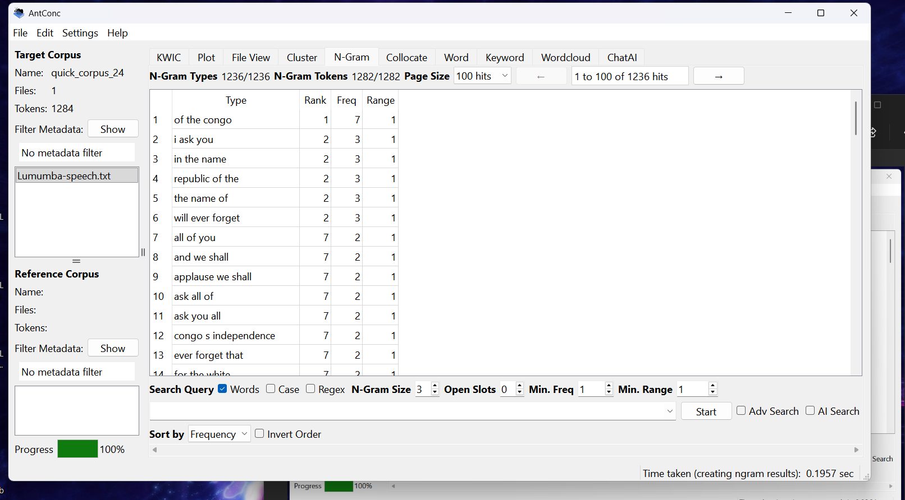
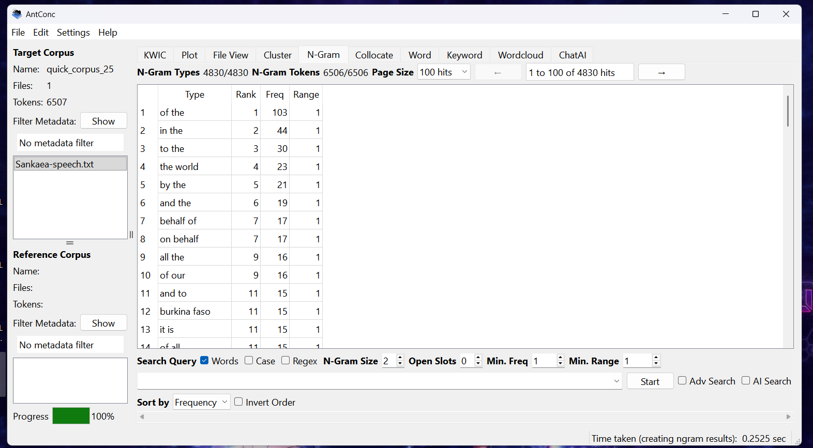
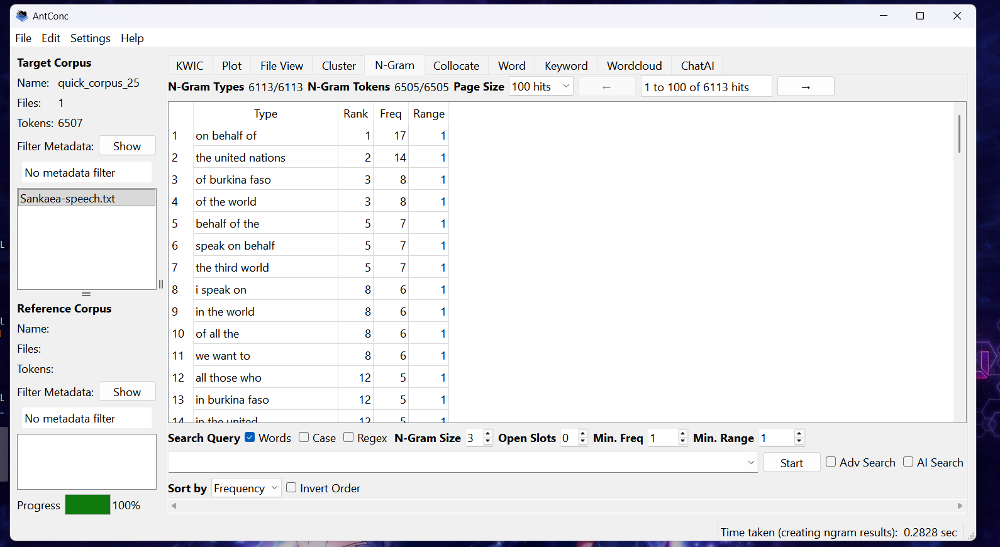
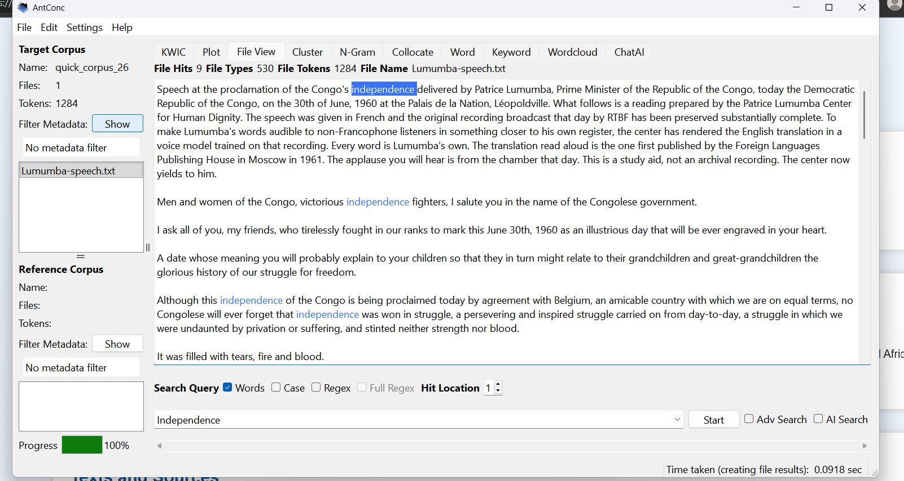
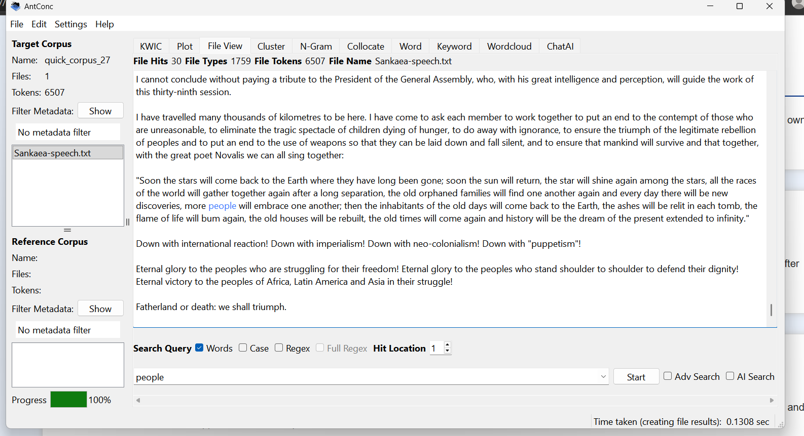

Corpus Analysis Project
By Timothy Baraka
My Research Question
How did Patrice Lumumba and Thomas Sankara use political language to promote African independence, unity, and resistance to foreign influence?
About My Project
For my corpus analysis, I chose to compare two political speeches by Patrice Lumumba and Thomas Sankara. I chose these leaders because they both supported African independence and opposed foreign influence. I used AntConc and Voyant Tools to compare the words and phrases in their speeches.
Texts and Sources
Patrice Lumumba (1960)
Lumumba gave his speech on June 30, 1960, when Congo gained independence from Belgium. He talked about freedom, national unity, and Congo's future.
Source: Patrice Lumumba Center
Thomas Sankara (1984)
Sankara gave his speech at the United Nations on October 4, 1984. He spoke about imperialism, inequality, and African independence.
Source: Thomas Sankara's UN Speech
My Text Files
I saved both speeches as text files on GitHub so others can access them and use them for research.
Voyant Tools Analysis
I used Voyant Tools to find frequently used words and understand the main topics in both speeches.
Patrice Lumumba

Words like "independence," "Congo," and "struggle" show how Lumumba focused on freedom and building a united Congo.
Thomas Sankara

Sankara's speech focused more on imperialism, inequality, and the problems African countries continued to face after independence.
AntConc Analysis
I used AntConc to find repeated phrases in both speeches. I compared 2-grams and 3-grams to understand how each leader used political language.
Patrice Lumumba


Lumumba repeated phrases like "we shall" and "of the Congo." These phrases show his focus on Congo's independence and the country's future.
Thomas Sankara


Sankara used phrases like "on behalf of" and "the Third World." This shows how he spoke about other countries facing foreign influence and inequality, not just his own country.
Keywords in Context (KWIC)
Patrice Lumumba
I used AntConc to search for the word "independence" in Patrice Lumumba's speech and found 9 results. Looking at how he used this word, I found that he connected independence to the struggles and sacrifices of the Congolese people. This shows me how important freedom was in his speech.

Thomas Sankara
I used AntConc to search for the word "people" in Thomas Sankara's speech and found 10 results. Looking at how he used this word, I found that Sankara often used "people" to talk about the people of Burkina Faso and other oppressed peoples around the world. This shows that his speech focused on collective struggle, human dignity, and the rights of ordinary people, not just one country.

Word Distribution
I used the Plot tool in AntConc to look at where important words appear throughout both speeches. This helps me see whether a word is used at the beginning, middle, or end of a speech.
Patrice Lumumba
For Lumumba, I searched for the word "independence" to see where he discussed it throughout his speech.
Thomas Sankara
For Sankara, I searched for the word "people" to see how the word appears across his speech and compare its distribution with Lumumba's results.
I will compare where the words appear after checking both Plot charts.
Comparison
After comparing both speeches, I found that Lumumba focused more on Congo's independence, while Sankara focused on problems African countries still faced after independence. Both leaders wanted freedom, unity, and less foreign influence.
Conclusion
This project helped me understand how political leaders use language to express their ideas. Using AntConc and Voyant Tools helped me compare their speeches and understand how both leaders supported African independence.